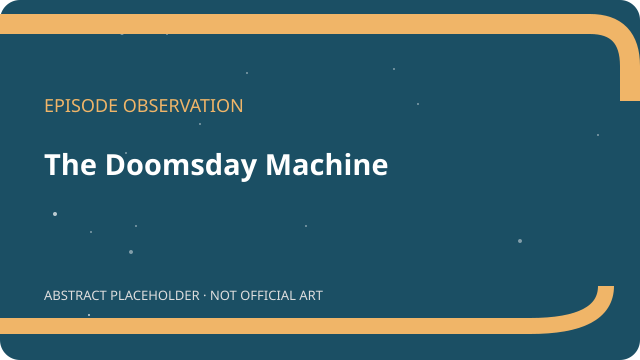

EPISODEHELD · UNVERIFIED METADATA
The Doomsday Machine
TOS
NO EPISODE STILL · Original abstract reference only, NOT OFFICIAL ART.
Source-local ID: lead:0000
Source and visual provenance
- Metadata recheck
- rechecked_exact; identity remains UNVERIFIED_METADATA
- Source family
- wikidata:wdqs
- Source input
explorer/research-leads.json- Edition identifier
- UNRESOLVED — no ISBN inferred
- Source row SHA-256
05762e0e010dfc6d8011d8d3628cbc24c4f23dcb53b1fa06b28da57c3f42a0b4- Visual seed SHA-256
10a21ef59f2c1fb130c12c0ea948f56232acd4b81308612f4d597aac2e703f0f- Generated SVG SHA-256
a0fe0b6036c43bbf8923e67907104d70e316d596d4fa09d791165a46f2ef3305- Admission and image rights
- 0 Work admission; no licensed source image used